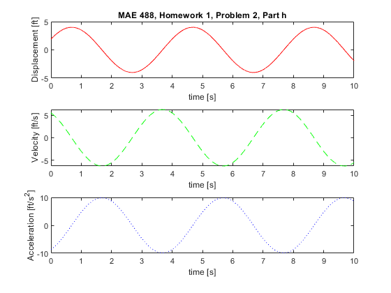
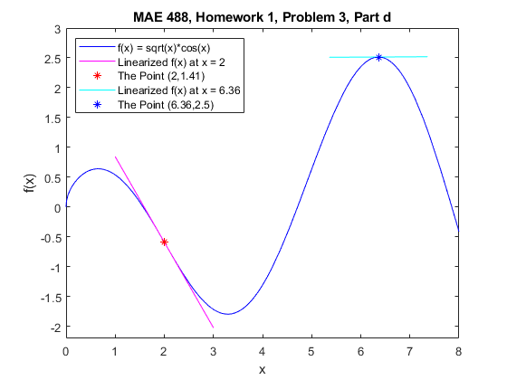
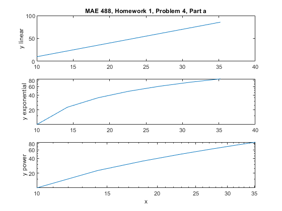
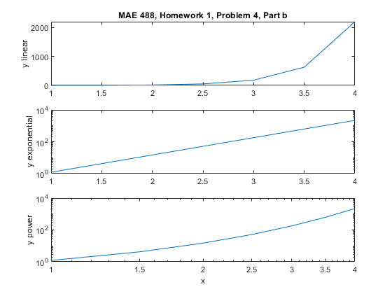
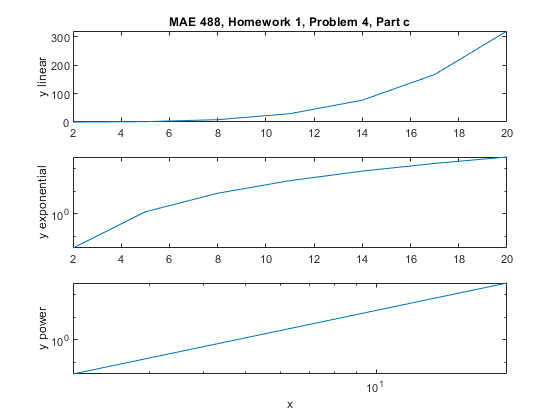

clear
clc
close all
fprintf('===================================================================\n')
fprintf('MAE 488, Homework # 1, Spring 2025\n')
fprintf('===================================================================\n')
fprintf('\n\n')
fprintf('=============================\n')
fprintf('Problem 2 Part h\n')
fprintf('=============================\n')
A = 4;
B = pi/2;
PHI = 1/2;
time = 0:0.001:10;
YOfT = @(t) A*sin(B*t + PHI);
VOfT = @(t) B*A*cos(B*t + PHI);
AOfT = @(t) -B*B*A*cos(B*t + PHI);
subplot(3,1,1)
y1 = YOfT(time);
plot(time,y1,'r')
xlabel('time [s]')
ylabel('Displacement [ft]')
title('MAE 488, Homework 1, Problem 2, Part h')
subplot(3,1,2)
y2 = VOfT(time);
plot(time,y2,'g--')
xlabel('time [s]')
ylabel('Velocity [ft/s]')
subplot(3,1,3)
y3 = AOfT(time);
plot(time,y3,'b:')
xlabel('time [s]')
ylabel('Acceleration [ft/s^2]')
fprintf('=============================\n')
fprintf('Problem 3 Part d\n')
fprintf('=============================\n')
FOfX = @(x) sqrt(x).*cos(x);
FPrimeOfX = @(x) -sqrt(x)*sin(x) + 0.5*x^(-0.5)*cos(x);
TaylorOne = @(x) FPrimeOfX(2)*x +(FOfX(2)-2*FPrimeOfX(2));
TaylorTwo = @(x) FPrimeOfX(6.36)*x +(FOfX(6.36)-6.36*FPrimeOfX(6.36));
figure(2)
fplot(FOfX,[0,8],'b')
hold on;
fplot(TaylorOne,[1,3],'m')
plot(2,FOfX(2),'r*')
fplot(TaylorTwo,[5.36,7.36],'c')
plot(6.36,FOfX(6.36),'b*')
title('MAE 488, Homework 1, Problem 3, Part d')
xlabel('x')
ylabel('f(x)')
ylim([-2.2,3])
legend('f(x) = sqrt(x)*cos(x)','Linearized f(x) at x = 2'...
,'The Point (2,1.41)','Linearized f(x) at x = 6.36' ...
,'The Point (6.36,2.5)','Location','northwest')
fprintf('=============================\n')
fprintf('Problem 4 Part a n')
fprintf('=============================\n')
ax = [10 14.2 18.4 22.6 26.8 31 35.2];
ay = [10 22.6 35.2 47.8 60.4 73 85.6];
figure(3)
subplot(3,1,1)
plot(ax,ay)
title('MAE 488, Homework 1, Problem 4, Part a')
ylabel('y linear')
subplot(3,1,2)
semilogy(ax,ay)
ylabel('y exponential')
subplot(3,1,3)
loglog(ax,ay)
ylabel('y power')
xlabel('x')
fprintf('=============================\n')
fprintf('Problem 4 Part b\n')
fprintf('=============================\n')
bx = [1 1.5 2 2.5 3 3.5 4];
by = [1.218 4.252 14.84 51.8 180.8 631.1 2202.7];
figure(4)
subplot(3,1,1)
plot(bx,by)
title('MAE 488, Homework 1, Problem 4, Part b')
ylabel('y linear')
subplot(3,1,2)
semilogy(bx,by)
ylabel('y exponential')
subplot(3,1,3)
loglog(bx,by)
ylabel('y power')
xlabel('x')
fprintf('=============================\n')
fprintf('Problem 4 Part c\n')
fprintf('=============================\n')
cx = [2 5 8 11 14 17 20];
cy = [0.032 1.25 8.19 29.28 76.83 167 320];
figure(5)
subplot(3,1,1)
plot(cx,cy)
title('MAE 488, Homework 1, Problem 4, Part c')
ylabel('y linear')
subplot(3,1,2)
semilogy(cx,cy)
ylabel('y exponential')
subplot(3,1,3)
loglog(cx,cy)
ylabel('y power')
xlabel('x')
===================================================================
MAE 488, Homework # 1, Spring 2025
===================================================================
=============================
Problem 2 Part h
=============================
=============================
Problem 3 Part d
=============================
=============================
Problem 4 Part a n=============================
=============================
Problem 4 Part b
=============================
=============================
Problem 4 Part c
=============================
    